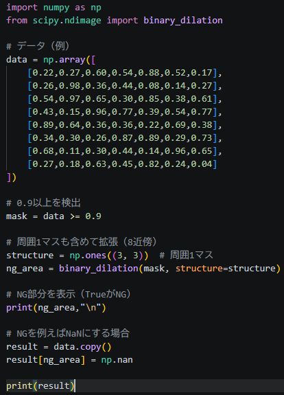
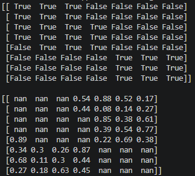

【Pandas】
- 日付を datetime に変換する。
- dfのA列を数値に変換する。
- dfのA列をリストに変換する。
- リストをデータフレームに変換する。
- 条件抽出
- groupby
- merge
- 欠損値(Nan)処理
- sort/drop_duplicates
- 時間平均
- 関数を定義して条件で分岐を行う
- df読込の高速化
- ファイル名抽出
- 複数のdfをエクセルに纏めて保存する
- 複数のグラフ画像を1つのPDFで出力する。
- メモリ最適化
- 相関係数
- 周囲NG指定
df["date"] = pd.to_datetime(df["date"])
df["A"] = pd.to_numeric(df["A"] , errors = "coerce")
A_list = df["A"].to_list()
df = pd.DateFrame(A_list , columns=["A"])
① A列が100以上の行だけを抽出する。
df_sub = df[df["A"]>=100]
② lotが530C9、且つ、A列が100以上の列だけを抽出する。
df_sub = df[(df["lot"]=="530C9") & (df["A"]>=100)]
③ 判定列を作成し、Aが100より大きい行をNG、それ以外をOKにする。
df["判定"] = np.where(df["A"]>=100 , "NG","OK")
① ロットごとのSensitivityの平均を求める。
df.groupby("lot")["Sensitivity"].mean()
② 複数集計
df.groupby("lot")["Sensitivity"].agg(["mean","max","min","count"])
③ 条件付きgroupby
df[df["Sensitivity"]>0].groupby("lot")["Sensitivity"].mean()
df = df.merge(df_address , on="GrobalAddress" , how="left")
# left:d1基準。d1の行はすべて残し、df_addressにないものはNaN(１番よく使う。)
# right:d2基準。
# inner:dfとdf_addressの両方に存在するキーの行だけ
# outer:dfとdf_addressの行をすべて残す。全部盛り。
① df = df["A"].dropna() # 欠損値の行を削除する。
② df = df["A"].isna() # 欠損値かどうかを判断する。(Ture/Falseをかえす)
① timeの順番で行をソートする。
df = df.sort_values("time")
② lotの重複行を削除する。
df = df.drop_dulicates(subset="lot",keep="last")
# 「keep="last"」は、同じロットナンバーがあるときに、最後の1件だけを残すという意味。複数回の検査がある場合、最後の検査データが残る。
df["time"] = pd.to_datetime(df["time"])
df.set_index("time").resample("1H").mean()
def class_test(x):
if x<=30:
return "c"
elif x<=60:
return "B"
else:
return "A"
df["rank"] = df["test"].apply(class_test)
①「必要な列だけ読み込む」
usecols = ["lot","date","Sensitivity"]
df = pd.read_csv(csv_file , usecols=usecols)
②「読み込んだ結果を結合する場合はまとめる」
dfs = []
for file in files:
dfs.append(pd.read_csv(file,usecols = usecols))
df = pd.concat(dfs , ignore_index = True)
# ignore_index=Trueは、結合後にndexを振りなおすという意味。
from pathlib import Path
files = //C:/user/takeda/folder/file.csv
names = [Path(f).stem for f in files]
with pd.ExcelWriter(r"\\c...\result.xlsx",engine="openpyxl) as writer:
for i , file in enemerate(file_list):
df = pd.read_csv(...)
データ加工...(省略)
df.to_excel(writer , sheet_name = sheet_name , index=False) from matplotlib.backends.backend.pdf import PdfPages import matplotlib.pyplot as plt with PdfPages(B0490_defect_data.pdf") as pdf: for ... fig,ax = plt.subplots(figsize=(13.333,7.5)) ax.scatterplot(...) plt.tight_layout() pdf.savefig(fig) plt.close(fig) df = pd.read_csv(file,dtype={"lot":"category","測定値":"float32"}) correlation = df['A'].corr(df['B']) print(correlation)   def wafer_to_image(df): max_x = int(df['x'].max()) max_y = int(df['y'].max()) img = np.zeros((max_y + 1, max_x + 1)) for _, row in df.iterrows(): x = int(row['x']) y = int(row['y']) v = row['voffset'] img[y, x] = v return img Step 2：複数ウエハー読み込み wafers = [] for file in file_list: # CSVファイル群 df = pd.read_csv(file) img = wafer_to_image(df) wafers.append(img) wafers = np.array(wafers) # (N, 200, 200) Step 3：円マスク def create_mask(size=200): cx, cy = size//2, size//2 Y, X = np.ogrid[:size, :size] dist = np.sqrt((X - cx)**2 + (Y - cy)**2) return dist <= size//2 mask = create_mask(200) Step 4：ベクトル化 X = [] for wafer in wafers: v = wafer[mask] # 円内だけ X.append(v) X = np.array(X) # (N, 約30000) from sklearn.preprocessing import StandardScaler #正規化 scaler = StandardScaler() X_scaled = scaler.fit_transform(X) from sklearn.decomposition import PCA #PCA pca = PCA(n_components=30) X_pca = pca.fit_transform(X_scaled) X_reconstructed = pca.inverse_transform(X_pca) #再構築 errors = np.mean((X_scaled - X_reconstructed)**2, axis=1) #異常スコア import numpy as np #異常ランキング idx = np.argsort(errors)[::-1] for i in idx[:10]: print(i, errors[i]) import matplotlib.pyplot as plt #異常の「場所」も可視化 i = idx[0] # 最も異常なウエハー diff = np.zeros((200, 200)) diff[mask] = np.abs(X_scaled[i] - X_reconstructed[i]) plt.imshow(diff) plt.colorbar() plt.title("Anomaly Map") plt.show()